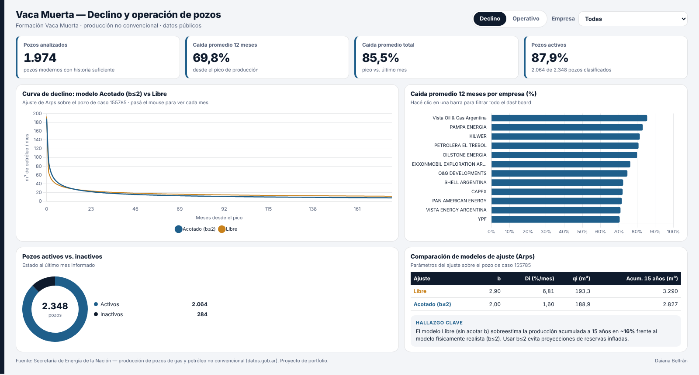

La pregunta de negocioCuando un pozo de Vaca Muerta llega a su pico de producción, ¿qué tan rápido cae y cuánto le queda productivo un año después?
Del dato crudo al universo de análisis
Producción mensual por pozo (datos.gob.ar). Filtré la formación Vaca Muerta y los pozos que empezaron a producir desde 2016, para comparar pozos con tecnología similar.
Parado no es lo mismo que agotado
Muchas caídas del 99% eran pozos parados, no agotados. Los separé con el tiempo efectivo de producción: el 12,1% estaba parado al cierre. Sin esa distinción, el declino se exagera.
Proyección con Arps
Proyecté la producción con el modelo de Arps, estándar de la industria. Sin acotar su parámetro b, el pronóstico a 15 años promete un 16% más. Lo validé con backtesting.
Qué significa para el negocio
Un pozo pierde en promedio el 70% en su primer año. Para sostener la producción hay que perforar en forma continua, y eso sostiene la demanda de servicios en la cuenca.